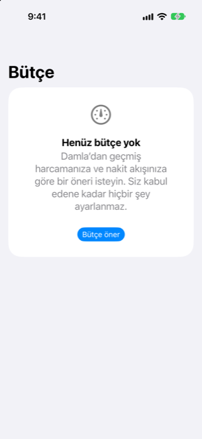

Kılavuz › Özet
Bütçe
Aylık sınırlar, ya da Damla'nın geçmişinizden önermesini sağlayın.
Bütçe, her harcama kategorisi için aylık bir sınır belirler ve geçerli ayın o sınırlara karşı nasıl gittiğini gösterir. Damla, sınırları geçmiş harcamalarınızdan ve nakit akışınızdan önerir; kabul etmeden önce herhangi bir rakamı değiştirebilirsiniz.

Ne zaman kullanılır
- Kategori başına, bir şablondan gelen bir sayı değil, gerçekten harcadığınızdan hesaplanmış aylık bir rakam istiyorsunuz.
- Bir iki kategoride sürekli bütçeyi aşıyorsunuz ve ay sonunda değil, ay içinde net bir sinyal istiyorsunuz.
- Gelirinizin, olağan harcamalarınızdan ve Damla'nın zaten bildiği taahhütlerden sonra ne kadar pay bıraktığını bilmek istiyorsunuz.
- Gelirinizin bir payı olarak bir birikim hedefi istiyorsunuz.
Adım adım
- Insights sekmesini açın ve Bütçe seçeneğine dokunun. Henüz bütçeniz yoksa, ekranda Henüz bütçe yok yazar ve Bütçe öner sunulur. Zaten bir bütçeniz varsa, Yeni bir öneri iste seçeneğine dokunun.
- Önerilen bütçe ekranında Gelirin yaklaşık … %'sini koru değerini kaydırıcıyla ayarlayın. Yüzde 10'dan başlar, 5'er adımlarla ilerler ve en çok 40'a çıkar.
- Özeti gözden geçirin: Tipik aylık gelir, Aylık olarak zaten ayrılmış (taksitler ve aşamalı alım ödemeleri, aylık ortalama olarak; hiçbir şey taahhüt edilmemişken bu satır gizlidir) ve Bu bütçeden sonra kalan.
- Varsa, Bilmeye değer altındaki notları okuyun.
- Herhangi bir sınırı, kendi satırının yanındaki alana yazarak değiştirin.
- Kabul etmek için Bu bütçeyi kullan düğmesine dokunun, ya da hiçbir şey ayarlamadan çıkıp gitmek için Vazgeç.
Bir öneri kabul edilmeden hiçbir şey ayarlanmaz.
Öneri nasıl yapılır
Damla, kaydedilmiş harcamalarınızın eksiksiz aylarına — en fazla altı tanesine — bakar ve her kategorinin aylık tutarlarının orta değerini olağan rakamı olarak alır. Öneri oradan başlar.
- Bir kategori, ilk göründüğünden bu yana en az üç ay boyunca bulunduğunda ve tutarları ortalamalarının en çok beşte biri kadar değiştiğinde, Sabit gider sayılır. Sabit giderler kırpılmaz.
- Diğer her kategori Esnek'tir. Esnek kategoriler, birikim hedefine ulaşmak için yalnızca gerektiği kadar kırpılır ve kırpma her biri için asla yüzde 35'i aşmaz.
- Birikim hedefi, kaydırıcıyla ayarladığınız gelir payıdır.
- Altbilgi, önerinin geçmişinizin kaç tam ayına dayandığını söyler.
Çalışılacak bir geçmiş yoksa, ekranda Henüz yeterli geçmiş yok yazar ve önce bir ekstre içeri aktarmanızı ya da biraz harcama kaydetmenizi ister.
Bütçe yürürlüğe girdikten sonra
Bir bütçeyi kabul ettiğinizde, Bütçe ekranı şunları gösterir:
- Bu ay harcanabilecek kalan: tüm sınırların toplamından bu ay şimdiye kadar harcadıklarınızın çıkarılmış hâli, bir ilerleme çubuğu ve "Y'nin X'i · M günün N'i" satırı ile.
- Kategoriye göre: her sınır ve bu ana kadar harcadıklarınız. Kırmızı bir çubuk ve "… kadar aşımda" ibaresi, sınırı geçmiş olduğunuz demektir. Turuncu bir çubuk ve Harcama, ayın geçişinden daha hızlı ibaresi, ayın temposunun yüzde 15'ten fazlası ilerisinde olduğunuz demektir.
İlerlemenin altında iki düğme vardır: Yeni bir öneri iste ve Bu bütçeyi kaldır.
Bilmekte fayda var
- Bütçe, ana para biriminizdeki harcama kategorileri için sınırlar belirler. Para taşımaz, hesap oluşturmaz ya da hiçbir şeyi engellemez.
- Öneri için gelir, geçmişiniz boyunca gerçekten giren paradır. Hiçbir şey kaydedilmemişse, Plan sekmesinde ayarladığınız gelire düşer ve bunu söyleyen bir not görünür.
- Bir sınır alanına 0 yazdığınızda, o kategori kabul ettiğiniz bütçeden çıkar. Alanı boş bırakmak çıkmaz: önerilen rakama düşer.
- Bilmeye değer altındaki notlar, en düşük bakiyenizin altına düşen bir tahmin çukurunu, geçen ay olağan dışı pahalı olan bir kategoriyi ya da hiçbir kırpma ile kapatılamayacak bir açığı belirtir. Geçmişiniz kazanmadığınızdan fazlasını harcadığınızı gösteriyorsa, bir not aylık açığın büyüklüğünü söyler.
- Bütçe, belirlediğinize karşı ne harcadığınızı raporlar. Finansal tavsiye değildir.
İlgili
Anlaşılmayan ya da eksik bir şey mi var? support@raveniq.ai adresine yazın ve hangi sayfa olduğunu belirtin.